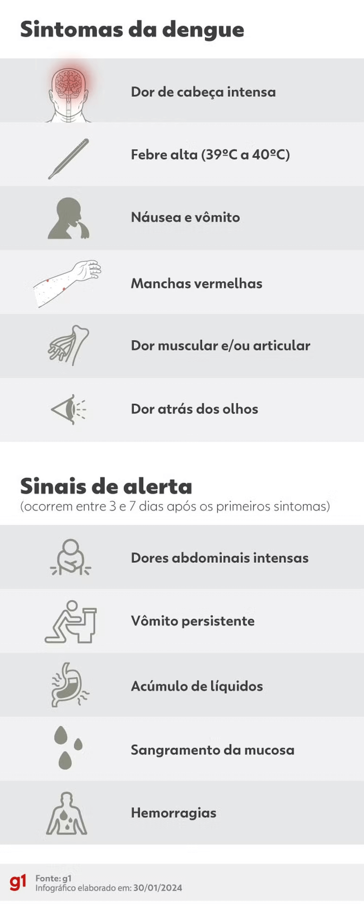

Resultados de um estudo científico publicado nesta quarta-feira (31) apontam que a vacina contra a dengue em desenvolvimento pelo Instituto Butantan apresenta uma eficácia geral de 79,6% na prevenção da doença. Os dados foram divulgados na revista científica "New England Journal of Medicine (NEJM)".
A taxa de eficácia é semelhante a encontrada nos ensaios clínicos da Qdenga (80,2%), vacina contra a dengue do laboratório japonês Takeda que passará a ser ofertada no Sistema Único de Saúde (SUS) este ano, em duas doses. No caso da vacina brasileira, prometida para 2025, a aplicação será em dose única.
Segundo a publicação, que trouxe dados de um acompanhamento de três anos de mais de 16 mil indivíduos de todo o Brasil, a eficácia para combater a infecção registrou números muito positivos em pessoas com e sem exposição prévia à dengue:
A Butantan-DV também se mostrou altamente eficaz na redução do risco de contrair dengue sintomática causada pelos sorotipos 1 e 2 da doença.
O imunizante desenvolvido pelo Butantan é projetado para proteger contra os quatro tipos diferentes do vírus da doença (DENV-1, DENV-2, DENV-3 e DENV-4).
Durante o estudo, porém, somente os tipos 1 e 2 estavam em circulação no país. E a eficácia observada para prevenir a infecção por esses vírus foi de 89,5% e 69,6%, respectivamente.
Fora isso, a vacina, que de acordo com o governador do estado de São Paulo, Tarcísio de Freitas (Republicanos), deve ficar pronta em setembro, também mostrou uma eficácia 80,1% entre crianças de 2 e 6 anos de idade, 77,8% entre jovens entre 7 e 17 anos de idade e até mesmo 90% entre adultos de 18 a 59 anos.
O Instituto Butantan vem desenvolvendo esse imunizante há mais de 10 anos, em parceria com o Instituto Nacional de Alergia e Doenças Infecciosas dos Estados Unidos (NIH, na sigla em inglês).
O estudo sobre a vacina avançou para fase 3 (quando começa a ser testada sua eficácia em pacientes) em 2016 e hoje está na etapa de acompanhamento. A previsão é de que todos os indivíduos completem cinco anos de acompanhamento este ano.
O estudo de fase 1 sobre o imunizante mostrou que ele induziu a geração de anticorpos (soroconversão) em 100% dos indivíduos que já tiveram dengue e em mais de 90% naqueles que nunca haviam tido contato com o vírus.
No teste clínico de fase 2, tanto a vacina liofilizada (em pó) desenvolvida pelo Instituto quanto a formulação original do NIH, induziram a produção de anticorpos e de células de defesa em pessoas com ou sem contato prévio com todos os sorotipos da dengue.
O imunizante, que também é tetravalente, deve proteger pessoas com e sem contato prévio com o vírus, como a Qdenga.
Essa sua imunogenicidade, ou seja, a capacidade da vacina de gerar uma resposta imune, foi analisada durante um ano por meio de testes de neutralização do vírus e se manteve alta em todos os participantes.
A vacina está sendo produzida com os quatro tipos do vírus da dengue atenuados, ou seja, enfraquecidos. A expectativa é que uma dose seja suficiente, já que, segundo os estudos, a dose adicional não induziu diferenças significativas.
No estudo, os pesquisadores do Butantan ressaltam inclusive que uma vacina contra a dengue em dose única traz várias vantagens.
Ela oferece, por exemplo, proteção rápida, sendo útil para viajantes e em casos de surtos. Além disso, uma única dose evita a necessidade de doses adicionais, simplificando a logística e aumentando a adesão à vacinação.
Os voluntários da pesquisa estão sendo avaliados por 5 anos. De acordo com o Instituto Butantan, esse período é importante para que seja garantida a segurança e imunogenicidade da vacina e envolve todos os voluntários do estudo, independentemente de pessoas infectadas ou não pelo vírus dengue.
Após o término do estudo de fase III, os dados serão analisados por uma comissão independente e só então o resultado dessa análise será submetido à aprovação da Agência Nacional de Vigilância Sanitária (Anvisa).
"[A vacina do Butantan] vai ficar pronta em setembro. E a gente está tentando antecipar esse cronograma. Vamos apresentar à Anvisa de maneira que no ano que vem a gente possa fabricar e fornecer", disse o governador Tarcísio de Freitas (Republicanos) nesta quarta, em entrevista à rádio CBN.
No primeiro mês deste ano, o Brasil contabilizou 243.721 casos (entre prováveis e confirmados) de dengue, mostrando um aumento de mais de 160% em comparação com janeiro de 2023, quando foram registrados 93.298 casos.
Enquanto os casos aumentaram, o número de mortes diminuiu de 61 (em 2023) para 24 (em 2024). É importante mencionar que 163 mortes estão sob investigação.
Esses dados estão disponíveis no painel de arboviroses do Ministério da Saúde e foram atualizados nesta quarta-feira às 14h17.
O aumento nos casos foi observado em todas as faixas etárias, sendo que pessoas de 30 a 39 anos apresentaram o maior número de registros, com 48.672 notificações somente em janeiro. No ano anterior, as notificações foram de 18.796 casos.
